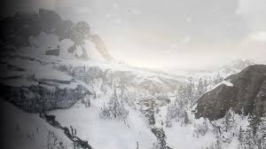
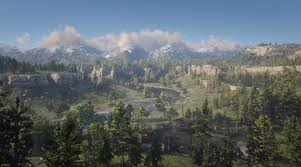
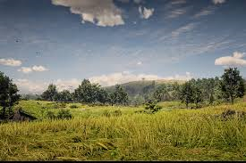
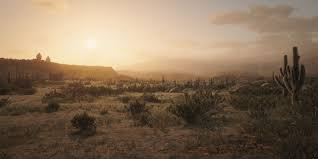

O mapa de Red Dead Redemption 2, desenvolvido pela Rockstar Games e lançado em 2018 para PlayStation
4, Xbox One e posteriormente para PC, é uma das maiores e mais detalhadas representações de mundo
aberto da franquia. Ambientado em 1899, o jogo serve como um prequel do Red Dead Redemption original
(2010). Ele é conhecido por sua vasta extensão, biomas variados e atenção impressionante aos
detalhes, proporcionando uma experiência imersiva do Velho Oeste americano.
🌄 Regiões Principais do Mapa
Ambarino 🏔️
Características: Região montanhosa e nevada inspirada nos estados do
norte dos EUA, como o Colorado e Montana.
Paisagens: Montanhas imponentes, penhascos íngremes, florestas de pinheiros e lagos congelados.
Locais Notáveis:
Mount Hagen: Uma das montanhas mais altas do jogo, sempre coberta de neve.
Tempestades de Neve: Condições climáticas severas dificultam a exploração.
Fauna: Lobos, alces, ursos, carneiros selvagens.
Clima: Frio intenso com nevascas frequentes.
Ambarino 🏔️

New Hanover 🌾
Características: Extensas pradarias abertas e colinas, representando o coração dos EUA antes da
industrialização.
Paisagens: Campos gramados, rios sinuosos, minas de carvão e pequenas vilas.
Locais Notáveis:
Valentine: Uma cidade movimentada, conhecida por saloons e fazendas.
Emerald Ranch: Um rancho enigmático com histórias sinistras.
Annesburg: Uma cidade industrializada com uma grande mina de carvão.
Fauna: Cavalos selvagens, coiotes, cervos, ursos negros.
Clima: Temperado com mudanças sazonais.
New Hanover 🌾

Lemoyne 🌳
Características: Região pantanosa e inspirada no sul dos EUA, como Louisiana e Mississipi.
Paisagens: Pântanos, plantações, rios e áreas costeiras.
Locais Notáveis:
Saint Denis: Uma grande cidade inspirada em Nova Orleans, com áreas urbanas movimentadas e
prédios modernos.
Bayou Nwa: Pântanos infestados de crocodilos e neblina constante.
Rhodes: Uma pequena cidade sulista dominada por antigas plantações.
Fauna: Jacarés, garças, tartarugas, guaxinins.
Clima: Quente e úmido, com tempestades frequentes.
Lemoyne 🌳

West Elizabeth 🌲
Características: Região diversificada que mescla florestas densas, pradarias e cidades em
desenvolvimento.
Paisagens: Lagos, florestas de pinheiros e áreas abertas ideais para caça.
Locais Notáveis:
Blackwater: Uma cidade em expansão, com um clima de modernização e civilização.
Great Plains: Grandes campos abertos com uma fauna rica.
Strawberry: Uma pequena vila montanhesa pitoresca.
Fauna: Ursos, alces, águias, coiotes.
Clima: Variado, com estações bem definidas.
West Elizabeth 🌲
New Austin 🏜️
Características: Região desértica que apareceu no primeiro Red Dead Redemption.
Paisagens: Desertos áridos, cânions, cactos e pequenas cidades abandonadas.
Locais Notáveis:
Tumbleweed: Uma cidade quase fantasma, com clima de decadência.
Armadillo: Uma pequena cidade no coração do deserto.
Fauna: Cascavéis, pumas, coiotes e abutres.
Clima: Seco e quente, com poucas chuvas.
New Austin 🏜️

🗺️ Detalhes e Recursos do Mapa
🌍 Transições Naturais
As transições entre as regiões são feitas de forma natural e fluida, oferecendo uma experiência
imersiva.
🌤️ Sistema de Clima Dinâmico
O jogo possui um sistema climático realista, com chuvas, nevascas, neblina e tempestades que
afetam a jogabilidade e a exploração.
🦌 Fauna e Flora Abundantes
Cada região possui uma biodiversidade única, com mais de 200 espécies de animais (mamíferos,
aves, peixes e répteis) e uma vegetação variada.
📜 Locais de Interesse e Segredos
O mapa está repleto de locais ocultos, missões secundárias, acampamentos de gangues, cavernas e
até easter eggs (como OVNIs e referências sobrenaturais).
🚂 Meios de Transporte
Os jogadores podem explorar o mapa a cavalo, a pé ou utilizando meios de transporte como trens e
diligências.
📌 Curiosidades
Tamanho e Escala:
O mapa de Red Dead Redemption 2 é um dos maiores já criados pela Rockstar, superando o de GTA V
em detalhes e diversidade.
Referências Históricas:
Cada local é inspirado em lugares reais dos Estados Unidos do final do século XIX.
Exploração Pós-Jogo:
Após a conclusão da história, os jogadores podem explorar quase todo o mapa, incluindo áreas do
jogo original.